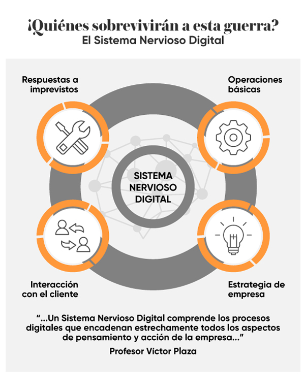

Inteligencia Artificial, planificacion y accion en el mundo real
Cuanto mas digitalizada esta una actividad, mayor valor le aporta la IA, el desarrollo de esta ultima ha venido de la mano de la madurez de las organizaciones en el uso de la economía digital experimentada en forma creciente en el siglo XXI. Su presencia se hace sentir cada vez más, ya sea en el transporte de personas y mercaderías, la logística que involucra el acopio el almacenamiento y la distribución, la salud en forma de optimización de los procesos de diagnóstico, intervención y recuperación de la salud, el hogar a través del ahorro en el uso de la energía, así como la facilitación de las labores diarias inherentes a ella y en lo que mas estamos observando, es en el comercio.
La sustitucion del ser humano por las maquinas
Una de las consecuencias de la digitalización de la economía, es la sustitución del ser humano por maquinas en un numero creciente de procesos y actividades. Un caso actual de automatización de un proceso que era considerado extremadamente complejo, era la conducción en el transporte.
Un vehículo totalmente autónomo como el que esta produciendo, e investigando Google, Tesla y otras organizaciones modernas. Este vehículo, que circulando por una carretera standard con la misma o mayor seguridad que ofrece un conductor humano, esta ya al alcance de la tecnología actual.
La ventaja del uso de esta tecnología con respecto a la tradicional, es la mayor seguridad vial, disminución de accidente de tránsito, ahorro de vidas innecesarias causadas por el uso de los transportes conducidos por los choferes.
Los beneficios del automóvil autónomo, como así se le llama, ya se pueden traducir en ahorro de vidas acaecidas, según estudios realizados hasta de 124,000 vidas a escala mundial, asimismo el beneficio de optimizar las rutas por vías tecnológicas que en este momento ya lo estamos usando a través de las diferentes apss, lo que haría disminuir la emisión de gases contaminantes, la racionalización del tráfico y la reducción de la cantidad de vehículos circundantes en estos momentos y el uso de parqueaderos, transformándolos en áreas que mejorarían la calidad de vida de los ciudadanos.
La predicción del Comportamiento
Es muy interesante que la IA nos este ofreciendo modelos predictivos del comportamiento, experimentando un auge extraordinario en el volumen de datos que generamos diariamente sobre nuestros hábitos de consumo, desplazamiento y servicios como lo esta haciendo actualmente la industria digital como Google, Youtube, Instagram y Facebook. Los proveedores de servicio pueden adaptar su oferta a las particularidades de cada usuario, hasta unos extremos espectaculares, tales que el consumidor pueda llegar a pensar que el algoritmo de IA le ha leído la mente.
El marketing digital dispone de dos técnicas principales.
1. El filtraje basado en el contenido
2. El filtraje colaborativo

Todo conectado con todo el internet de las cosas o internet of things ( IoT)
Kevin Ashton del MIT en 1999 propuso que el internet de las cosas es una red global formada por las interconexiones entre dispositivos físicos tales como vehículos conectados, casas inteligentes y en general todo aquello capaz de transmitir datos. Se calcula que 30,000 es el numero de dispositivos integrados actualmente en la IoT durante la presente década.
En el futuro que se vislumbra gracias a la IoT las comunicaciones tendrán el potencial de tornar mas eficiente los procesos existentes en ámbitos tan diversos como la gestión de las ciudades, el comercio o la mayoría de las industrias, así como la manufactura, los procesos productivos del campo, el comercio marítimo y otros.
Estableciendo las bases de las tecnologías cognitivas
A medida que las empresas comienzan a experimentar con herramientas cognitivas se enfrentan a importantes obstáculos en el desarrollo y la implementación de las mismas. Según el estudio, para que las organizaciones puedan lograr sus objetivos con la ayuda de tecnologías cognitivas deben seguir estos cuatro pasos:
1. Comprender las Tecnologias
es fundamental aprender qué tecnologías pueden ayudar a conseguir los resultados deseados e invertir en las capacidades correctas para lograrlos con éxito.
2. Crear una cartera de proyectos:
evaluar las necesidades de la organización para el desarrollo de proyectos en áreas que puedan beneficiarse más de las tecnologías cognitivas.
3. Lanzamiento de proyectos piloto:
crear proyectos de prueba para aplicaciones cognitivas antes de presentarlos en toda la empresa.
4. Escalado:
facilitar la colaboración entre los expertos en tecnología y los propietarios de los procesos de negocios para llevar el conocimiento al siguiente nivel.
Ventajas de las tecnologías cognitivas: ideas más inteligentes y resultados más sólidos
Las tecnologías cognitivas permiten la combinación del trabajo entre personas y máquinas explorando nuevas posibilidades y superando desafíos comerciales. El valor de este trabajo está en la conjunción de iniciativas complementarias: el dominio de la tecnología, la identificación de los datos correctos, trasladar la ciencia hacia un ámbito comercial y la actualización de cómo se hace el trabajo. En Deloitte, ayudamos a nuestros clientes a desarrollar una "ventaja cognitiva" a través de un proceso de pensamiento disruptivo que impulsa ideas más inteligentes y resultados más sólidos.